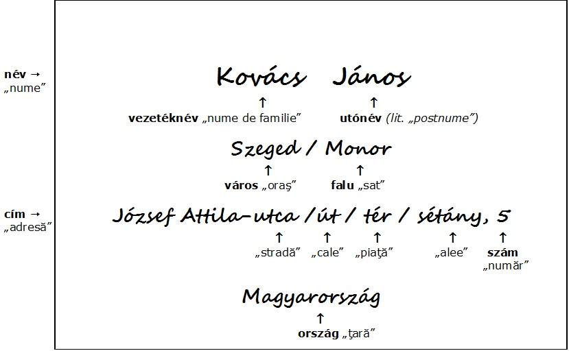

Maghiara cu András · Lecția 009
Az új szomszéd / Vecinul cel nou
Citește dialogul în maghiară și compară-l cu traducerea. Urmărește explicațiile, apoi exersează înainte de a continua.
În această pagină
| 9. (kilencedik) lecke | 9 kilenc |
| Az új szomszéd | Vecinul cel nou | [-ul nou vecin] |
Mergeți pe Google Translate (site extern), ascultați dialogul și repetați-l în timp ce-l citiți, până ce îl pronunțați corect. Nu recurgeți deocamdată la traducere!
| Kovács úr: | Jó napot kívánok! | Bună ziua! | [Bună zi (acuz.) doresc! |
| Fehér úr: | Jó napot. Azaz jó estét. | Bună ziua. Mai bine zis, bună seara. | Bună zi (acuz.). Adică bună seară (acuz.). |
| Kovács úr: | Igen, jó estét, késő van. Én Kovács János vagyok, az új szomszéd. | Da, bună seara, e târziu. Eu sunt János Kovács, vecinul cel nou. | Da, bună seară (acuz.), târziu este. Eu Fierar Ion sunt, -ul nou vecin. |
| Fehér úr: | Én Fehér Lajos vagyok. Örvendek. | Eu sunt Lajos Fehér. Îmi pare bine. | Eu Alb Ludovic sunt. Bucur. |
| Kovács úr: | Én is örvendek. Ön itt lakik? | Îmi pare bine și mie. Locuiți aici? | Eu de-asemenea bucur. Dv. (sing.) aici locuiește? |
| Fehér úr: | Igen. Minden jót kívánok! | Da. Toate cele bune! | Da. Tot bun (acuz.) doresc!] |
| Kovács úr: | Viszontlátásra! | La revedere! | La-revedere! |
A szövegben megjelenő új szavak / Cuvintele noi din text
Substantive (cu forma de acuzativ):
| este, -ét (cu schimbarea e > é la acuzativ) | seară |
| nap, -ot | zi |
| szomszéd, -ot | vecin |
| úr, urat (excepție: scurtarea vocalei și varianta de desinență -at) | domn |
Verbe:
| lakik, -om (desinența la persoana I singular), -sz (desinența la persoana a II-a singular), -ik (desinența la persoana a III-a singular)* | a locui |
| örvend, -esz (desinența la persoana a II-a singular) | a se bucura |
* Vezi mai jos explicația 4.
Pronume personal:
| ön | dumneavoastră (adresat unei singure persoane) |
Adverbe:
| azaz | 1. adică; 2. mai bine zis |
| késő | târziu |
| is | și (= de asemenea) |
Enunțuri comunicative:
| Minden jót (kívánok)! (salut la despărțire, urare) | (Vă doresc) toate cele bune! |
| Kovács János vagyok. (prezentarea vorbitorului) | Sunt János Kovács. |
| Örvendek! (răspuns la prezentare) | Îmi pare bine! (lit. „Mă bucur!”) |
| (A) viszontlátásra! (salut la despărțire) | La revedere! |
Szövegértés / Înțelegerea textului – După ce ați studiat dialogul și vocabularul acestuia, faceți acest exercițiu, pentru a vedea dacă îl înțelegeți fără traducere.
Kiegészítő szókincs és kommunikációs mondatok / Vocabular și enunțuri comunicative suplimentare
| Kovács úr és Fehér úr nem ismerősök, idegenek. Itt megismerkednek. Kovács úr bemutatkozik. | Domnul Kovács și domnul Fehér nu sunt cunoștințe, sunt străini. Aici fac cunoștință. Domnul Kovács se prezintă. |
Prezentare:
| Cererea prezentării: | |
| Hogy hívják (önt)? | Cum vă numiți? (lit. „Cum vă cheamă?”) |
| Kihez van szerencsém? | Cu cine am onoarea? (lit. „... norocul?”) |
| Introducerea propriei prezentări: | |
| Még nem ismerjük egymást. | Încă nu ne cunoaștem. |
| Prezentarea propriu-zisă a vorbitorului: | |
| Engedje meg, hogy bemutatkozzam: … | Dați-mi voie să mă prezint: ... |
| Még nem mutatkoztam be. … | Încă nu m-am prezentat: ... |
| Kovács Jánosnak hívnak. | Mă numesc János Kovács. |
| Kovács János a nevem. | Numele meu este János Kovács. |
Întrebări și răspunsuri despre datele personale:
| – Hány éves? | – Câți ani aveți? |
| – 50 (ötven) éves vagyok. | – Am 50 de ani. |
| életkor | vârstă |
| – Hol lakik? | – Unde locuiți? |
| – Külföldi vagyok. | – Sunt străin(ă) (lit. „... din afara țării.”) |
Date personale pe un plic:

Magyarázatok
| 1 | Locul atributului. În maghiară, atributul se plasează totdeauna înaintea substantivului determinat: az új szomszéd „vecinul cel nou”, édes kávé „cafea dulce”, tiszta ing „cămașă curată”. Numele de familie, funcționând ca un atribut, se plasează de asemenea înaintea a ceea ce corespunde în română prenumelui, acesta fiind deci un postnume în maghiară. La fel, în Kovács úr „domnul Kovács”, Fehér úr „domnul Fehér”, numele fiind atributul lui úr, locul său este înaintea acestuia. |
| 2 | Verbe cu rădăcina terminată în două consoane. Verbul örvend „a se bucura” este puțin diferit de cele întâlnite până aici în ceea ce privește variantele de desinență la trei persoane. El se conjugă örvendek, örvendesz, örvend, örvendünk, örvendetek, örvendenek. |
| 3 | Pronumele ön. Acesta este un pronume personal de politețe ce se adresează unei singure persoane. Gramatical este de persoana a III-a singular, prin urmare, dacă este subiectul propoziției, predicatul este tot la persoana a treia singular. Este ceva asemănător cu „domnia voastră” din româna veche. Se spunea, de exemplu, „Domnia voastră locuiește aici?” În traducerea cuvânt cu cuvânt, redau acest pronume cu „dv. (sing.)”. |
| 4 | Verbe cu desinența-ik. Ați văzut că, în general, verbele nu au desinență la persoana a III-a singular a indicativului prezent. Verbul lakik „a locui” face parte dintr-o categorie relativ restrânsă de verbe care au desinență la această persoană, și anume -ik. Unele dintre aceste verbe au desinența -ol/-el la persoana a II-a singular, altele desinența -sz. În plus, majoritatea acestor verbe au la persoana I singular desinența -om/-em, dar sunt și unele cu -ok/-ek, ca celelalte verbe. Verbul lakik se conjugă lakom, laksz, lakik, lakunk, laktok, laknak. Alt verb cu aceleași desinențe este bemutatkozik, -om, -ol „a se prezenta”, pe când verbul megismerkedik „a face cunoștință” are desinențele -em, -sz etc. De acum înainte voi da și desinența de persoana I singular a verbelor cu -ik. |
Gyakorlatok
Acum acoperiți dialogul în maghiară și partea maghiară a exercițiilor, și reconstituiți-le cu ajutorul traducerii. Traducerea cuvânt cu cuvânt din coloana a treia vă ajută să înțelegeți cum funcționează limba maghiară.
Kiegészítő dokumentum / Document suplimentar (Citiți-l și străduiți-vă să-l înțelegeți cu ajutorul unui dicționar. Dacă chiar nu reușiți, mergeți la traducerea sa.)
Exemplu de lectură din 2008. Liniuța — reprezintă un câmp necompletat în captură. Suma de 15 euro apare doar în versiunea română a sursei.
Régizene Fesztivál
Csíkszereda · 2008. július 13–20.
Hu · Ro · En
Üzenet · Műsor · Mesterkurzusok · Képek 2008 · Szervezők/támogatók · Sajtó · Vendégkönyv · Archívum · Térkép
Bejelentkezési lap
- Családnév, keresztnév
- —
- Cím
- —
- Telefon és e-mail cím
- —
Ezennel bejelentkezem a — kurzusra, vállalom a regisztrációs díj kifizetését 2008. június 15-éig.
Szállást igényelek (kérjük X-szel jelölje meg a napokat, amelyekre szállást igényel):
Július 13, 14, 15, 16, 17 — nincs megjelölve.
Étkezést igényelek (kérjük X-szel jelölje meg a napokat, amelyekre étkezést igényel):
Július 13, 14, 15, 16, 17 — nincs megjelölve.
- A következő repertoárral jelentkezem
- —
Bejelentkezés
Traducere în română: Festival de Muzică Veche
Miercurea Ciuc · 13–20 iulie 2008
Hu · Ro · En
Mesaj · Programe · Cursuri de măiestrie · Foto 2008 · Organizatori/sponsori · Presa · Cartea de oaspeți · Arhivă · Hartă
Foaia de participare
- Nume, prenume
- —
- Adresă
- —
- Telefon/Adresă de mail
- —
Prin prezenta mă înscriu la cursul de — și mă oblig să plătesc taxa de înregistrare, 15 euro până la data de 15 iunie 2008.
Rog să-mi asigurați cazare pentru zilele (bifați zilele pentru care solicitați cazare):
13, 14, 15, 16, 17 iulie — nicio zi bifată.
Rog să-mi asigurați masă pentru zilele (bifați zilele pentru care solicitați masă):
13, 14, 15, 16, 17 iulie — nicio zi bifată.
- Mă înscriu cu următorul repertoriu
- —
Participare